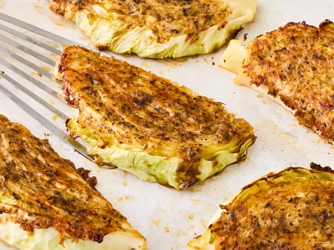

Back
Parmesan Cabbage

Description
If you've never tried roasting cabbage before, let this recipe be your reason to start:
Ingredients
- 3 ounces Parmesan cheese, shredded (about 3/4 cup)
- 3 tablespoons olive oil
- 1 tablespoon dried italian seasoning blend
- 2 teaspoons garlic powder
- 3/4 teaspoon kosher salt
- 1/2 teaspoon paprika
- 1 small (2 pounds) head cabbage, cut into 8 (1 1/2-inch) wedges
Steps
- Gather all ingredients. Preheat oven to 450 degrees F (230 degrees C) with racks in top third and lower third positions. Line 2 large-rimmed baking sheets with parchment paper.
- Stir together Parmesan cheese, oil, Italian seasoning, garlic powder, salt, and paprika in a small bowl until cheese is well coated in oil mixture.
- Evenly spread Parmesan mixture on one side of each cabbage wedge (about 2 tablespoons per wedge) and arrange, paste side down, on the prepared baking sheets.
- Bake in the preheated oven until cabbage is tender-crisp and Parmesan creates a golden brown crust on bottom of cabbage, 16 to 18 minutes, rotating pans between top and bottom racks and from front to back halfway through.
- Remove cabbage from oven, and let stand undisturbed for 2 minutes, before using a spatula to release cabbage wedges from baking sheets. Turn cabbage wedges over, cheese side up; and bake at 450 degrees F (230 degrees C) until cabbage is tender, 6 to 8 minutes. Serve hot.